Meet Flik. Independent-thinker ant. The only insect capable of throwing a kink in the food chain. After one of Flik's inventions goes terribly wrong, he embarks on a mission to help save the colony from a gang of freeloading grasshoppers in order to get back in good graces with the Queen. But when the group of "warrior bugs" that Flik recruits turns out to be a bumbling circus troupe, he must believe in himself and his inventions to save Ant Island once and for all.
Everyone keeps telling Flik to stop questioning tradition and be a good worker ant, but he knows that's not his lot in life. Even when the going gets tough, this resourceful but misguided ant risks everything despite some major setbacks and the prevailing perception that he's a failure.
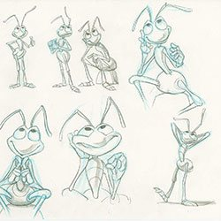

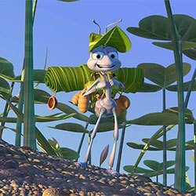
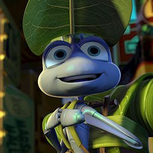
Princess Atta often seems aggravated, but you would too if you were ascending to the throne and had to deal with a mean freeloading grasshopper. It takes a few tries for Atta to realize the colony's courage and strength, and to learn to trust her instincts as a leader.


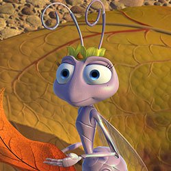
As the Queen's youngest daughter, Dot proves that size doesn't matter when it comes to being a heroine. The pint-sized princess learns to spread her wings and convinces Flik to return to save the colony.
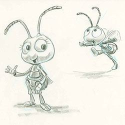
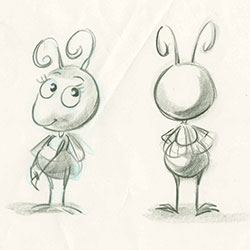


The ant colony's miniature monarch has been around the island more than a few times and she's looking forward to retiring and letting Atta take over the throne.

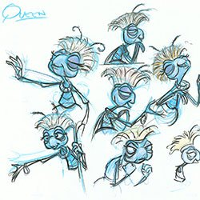


A member of the circus crew, Francis is the misunderstood male ladybug. To compensate for his mistaken gender, he develops a macho attitude that can only be softened by Ant Island's young Blueberries troop.

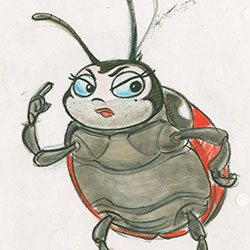

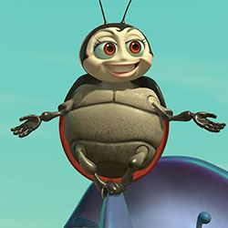
This Bavarian caterpillar who can't stomach the idea of a battle is happiest when he's munching on food. For Heimlich, eating large doesn't guarantee a set of large wings—but he loves them just the way they are.


At first glance he looks like a menacing insect, but Dim has a heart of gold. The lovable rhino beetle appears as the ferocious star of P.T. Flea's circus act, even though he has an extremely low tolerance for pain.


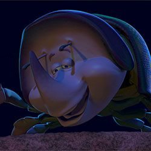
These Hungarian pill bugs don't speak a word of English, but it's no problem when they're getting shot out of a cannon or performing acrobatic routines that always end in fights.

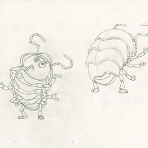
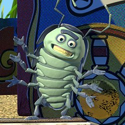
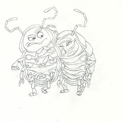
Manny is a pompous praying-mantis magician who prays for the good old days when audiences responded to his act. His moth mate, Gypsy, requires all eyes on her lovely wings and helps Manny look good in their performances.
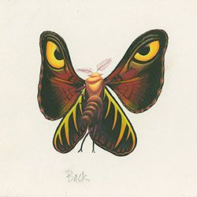
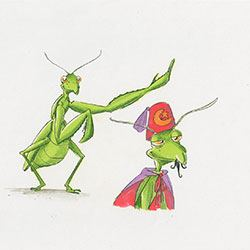
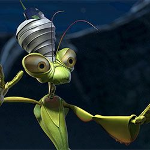
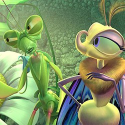
Her husbands keep dying on her, but that doesn't stop this widowed black widow spider from spinning a (sometimes) successful career as a circus performer—and unlikely "warrior bug."


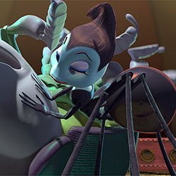
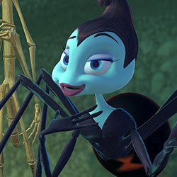
Slim is an intellectual walking stick who takes his acting a bit too seriously. He often ponders his fate and wonders if he'll ever be able to break out of his circus role as the stick.
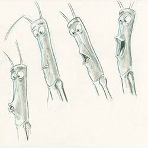

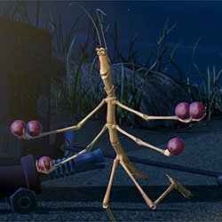

He's a mean, lean eating machine and can squash an ant's head with his foot if the food's not on the offering stone. Hopper's tough exterior conceals an even tougher interior and a superior intellect.

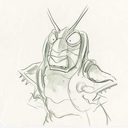
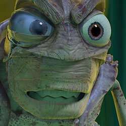

Most of A Bug’s Life takes place within a few hundred square feet. The filmmakers got to know the tiny idyllic island “like a live-action set,” said John Lasseter. It was also home to a cast of thousands. The filmmakers had to contend with 400 crowd scenes, ranging from 25 to 1000 ants in each shot. In a first for animated film crowds, each character is unique, fully animated, and clearly acting.
Flik’s epic adventure had to lead to somewhere exciting, and the perfect contrast to a pastoral island was a city teeming with exotic insects. In a rare acknowledgement of human presence, the Pixar team created a bustling metropolis out of a garbage pile. It’s here that Flik encounters P.T. Flea’s Circus Troupe. According to Co-Director Andrew Stanton, the inspiration for a multinational flea circus“was the first thing that really felt like us, felt like Pixar.”
Garbage can be useful, particularly when you're trying to think of ideas for a bug-scaled circus. By rifling through trash, the artists transformed everyday objects into a miniature scaled version of a recognizable circus. Egg cartons stacked together looked like a grandstand. A broken umbrella, if painted pink and white, had the exact pattern and shape of a circus tent. A thimble looked big enough to serve as a pedestal for a flea. Prop by prop, a circus came together as if assembled by bugs.
The filmmakers had always seen Hopper’s herd of marauding grasshoppers as a motorcycle gang. An abandoned sombrero became a south-of-the-border hideout where the gang could party and Hopper could nurse his grudge. When the grasshoppers take to the sky bent on revenge, the sound design included motorcycle engines mixed in with the flapping wings.
The Pixar team quickly realized that Mother Nature is a terrific artist. Early in the process, Production Designer Bill Cone crawled on his stomach with a camera for a closer look at the vegetation that would become the film’s architecture. Art Director Tia Kratter spent a year painting natural objects. Their efforts came together in“The Leaf Bridge Test,” a scene that used sophisticated lighting to capture the translucence of a leaf and served as visual inspiration for the film.
A colorscript is a sequence of small pastel drawings or paintings used to emphasize color in each scene and establish a film's visual language. There were three ways to think of color in A Bug’s Life, says colorscript creator Bill Cone: What season is it? What time of day is it? And what does the story require—gloom, sunshine, or threatening shadows? From glowing mushrooms and shafts of daylight in the ant’s bunker to the late afternoon lighting scheme for Flik and Atta’s romantic encounters, the colorscript set the tone.
DIRECTED BY JOHN LASSETER
CO-DIRECTED BY ANDREW STANTON
ORIGINAL STORY BY JOHN LASSETER, ANDREW STANTON, JOE RANFT
SCREENPLAY BY ANDREW STANTON, DONALD MCENERY, BOB SHAW
MUSIC BY RANDY NEWMAN
STORY SUPERVISOR JOE RANFT
SUPERVISING FILM EDITOR LEE UNKRICH
SUPERVISING TECHNICAL DIRECTORS WILLIAM REEVES, EBEN OSTBY
DIRECTOR OF PHOTOGRAPHY SHARON CALAHAN
PRODUCTION DESIGNER WILLIAM CONE
SUPERVISING ANIMATOR GLENN MCQUEEN, RICH QUADE
ART DIRECTORS TIA W. KRATTER, BOB PAULEY
SUPERVISING ANIMATORS GLENN MCQUEEN, RICH QUADE
SHADING SUPERVISOR RICK SAYRE
SUPERVISING LAYOUT ARTIST EWAN JOHNSON
PRODUCTION SUPERVISOR - TECHNICAL GRAHAM WALTERS
PRODUCTION SUPERVISOR - EDITORIAL BILL KINDER
PRODUCTION SUPERVISOR - STORY, ART & LAYOUT BZ PETROFF
EXECUTIVE MUSIC PRODUCER CHRIS MONTAN
"THE TIME OF YOUR LIFE" WRITTEN AND PERFORMED BY RANDY NEWMAN
CASTING BY RUTH LAMBERT, MARY HIDALGO-ASSOCIATE
FLIK DAVE FOLEY
HOPPER KEVIN SPACEY
ATTA JULIA LOUIS-DREYFUS
DOT HAYDEN PANETTIERE
QUEEN PHYLLIS DILLER
MOLT RICHARD KIND
SLIM DAVID HYDE PIERCE
HEIMLICH JOE RANFT
FRANCIS DENIS LEARY
MANNY JONATHAN HARRIS
GYPSY MADELINE KAHN
ROSIE BONNIE HUNT
TUCK & ROLL MICHAEL MCSHANE
DIM BRAD GARRETT